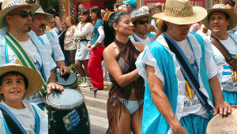

Fuengirola
 De: La Frikipedia, la enciclopedia extremadamente seria.
De: La Frikipedia, la enciclopedia extremadamente seria.
| De la serie ciudades del mundo:
|
| Fuehirola
|
|
|
|
| (Bandera)
|
(Escudo de armas)
|
|
| Topónimo oficial
|
Donde Chiwaka engendró a su primer hijo
|
| País
|
Nooo, se lee El Mundo
|
| Código postal
|
1 por cada habitante
|
| Superficie
|
abarrotada y creciendo
|
| Altitud
|
una silla y dos palmos
|
| Distancia
|
como de aquí a la higuera tres veces
|
| Fundación
|
3 horas A.D. Cristo
|
| Población
|
Humana ...y del Taco en verano. Humana en las demás estaciones del año
|
| Gentilicio
|
Cordobeses o Fuengirolianos
|
| Alcalde
|
Leticia Sabater o "Pachina"
|
| Cualquiera es un nota en este pueblo
|
Fuengirola desde el satélite de Gúguel: Los puntos blancos señalan guiris buscando infructuosamente la sombra de un árbol de verdad bajo un sol abrasador
Ya quedan pocos: Fuengiroliano ario, de RH Negativo, justo al salir de un after-hours, antes de ir a votar a Espe
Fuengirola o más conocida localmente como Fuehirola es una ciudad mundialmente conocida por ser la única de España en la que ninguno de sus habitantes sabe lo que es una tilde. Aunque sobre este tema hay otra teorías, que aseguran que el hecho de que los fuengirolianos no pongan nunca una tilde en sus escritos, se debe a un grupo radical, que se encuentra a sus afueras, cuya única actividad es interceptar todos los envíos de teclados, y arrancarles la tecla de la tilde, antes de permitir que lleguen a Fuengirola. Además este grupo radical, intercepta todos los programas y eliminan el software que tenga algo que ver con los correctores ortográficos.
El 25 de Mayo es un gran día para los frikis fuengirolianos
- Fuengirola es tambien conocida como la Habana Chica (Por su himno oficial, escrito, cantado y dedicado por el mismísimo Fidel Castro a la alcaldesa Un Sol de Ciudad" con el que se queda tan pancha, ...por eso viene lo de La Pachina, según su cronista el egregio sevillano Antonio Burgos, eminente frikipeda y asiduo visitante de Fuengirola y de esta nuestra Frikipedia.
- Lemas de la ciudad = Ande cohones aparco yo a esta hora de balde, pero ultimamente se suele uutilizar Cagonlosmuertoslagrúa
Fuengirola tiene la peculiaridad de que sus habitantes pagan religiosamente, cada año, el sello municipal del vehiculo, ...pero tambien tienen que pagar religiosamente para aparcar, aunque sea en su jodía calle.
¿Solucion municipal? No se queje, venda su coche, o rásquese el bolsillo y cómprese una plaza de aparcamiento a precio de coste por sólo 16.000 euros en cómodos plazos y con derecho a pagar IBI, ...aunque solo sea una concesión a 50 años.
Si le pilla en la otra punta de Fuengirola: Vaya al parkímetro más cercano donde le atenderá una amable señorita con bigote, gorra y maquinilla de poner multas. Fuengirola es un gran negocio para los amigos de los que mandan. Los fuengiroleños semos gente muy civilizada y con mucha paciencia contribuimos a su riqueza como buenos corderos.
El sistema de pareja en Fuengirola es monógamo, es decir, un mono por pareja. La fuengiroliana se suele distinguir del macho porque suele llevar mechas y chandal por las mañanas para llevar los niños al cole en el todoterreno koreano más grande que había en el concesionario.
El numero de habitantes es invariable, pero si juega el Rosaleda (estadio del Malaga CF) puede verse el incremento negativo de habitantes en la ciudad, cogiendo de ahí el nombre de Sohail, nombre arabe efectivemente, ...relativo a que la cantidad de moros y arabes en general en este territorio, y siendo ellos los unicos habitantes durante los 90 minutos de juego, cabe destacar que son los mejores momentos de la ciudad, mas lo que tarden en salir de Málaga toda la "gente guapa" en sus Folksfaguen Golf, A3, o cualquier clase de vehiculo alemán sin alas.
La Invasión
También varía en el número de habitantes la estacion del año: en invierno, primavera y otoño, es fijo (aparte de lo citado anteriormente), en verano, sufrimos un incremento del 450%. De todos es sabido que siempre hay alguien debajo de tu cama o dentro de tu armario, pues en Fuengirola en verano, pueden llegar a haber hasta cuatro personas por cama ...o más.
Ademas de ser altamente identificable:
Formas de identificación de los invasores
Los venidos de la misma España
Que a su vez se dividen en:
- Madrideños:
- Mas de 30 años: Desde que llegan hasta que se va te recuerdan su fugaz paso por despeñaperros con cinco en el megana a 210 km/h, y porque habia trafico, o vacilando de trafico en madrid, copn frases tipicas como, "yo he llegado a acampar en el techo del folksfaguen" y "en la guantera siempre tengo el campin gas y un par de morcillas". Frase fin de temporada: "Este verano no nos hemos gastado un duro en Fuengirola, nos lo hemos traido todo del Eroski del barrio"
- Menos de 30 años: Desde que llegan estan jugando a la PSP, y protestando por todo, menos a la hora de salir, que se visten de gala, se peinan con una tostada untada de mantequilla -especialmente los de Sevilla- y se mezclan con la creme de la creme para tomar una copichuelas
- Cordobeses:
- Padre de familia: Su distintivo habitual suele ser la camiseta de tirantes de canalé blanca o celeste y sombrerito de paja tirolés. Desde que llega hasta que se va esta en la casa de algun familiar o conocido, tambien cordobés, quejándose de todo, hablando de lo caro que es todo, o, protestando en la terraza de algun bar/chiringuito porque el "nene" no le ha puesto hielos en cantidad multiplo de 3. Frase fin de temporada: "Este verano no nos hemos gastado un duro en Fuengirola, nos lo hemos traido todo del Mercadona de Lusssena"
- Madre de familia: Sombra del padre de familia. Seguramente acompañada de tuperwares de filetes empanados, tortilla de patatas, ensaladas de pimientos... <--- Y UN CIPOTE!
- Resto del Pais: Solo saben decir que todo esta perfecto, pero casi nunca vuelven.
- Viejos: Gorras de yesista, camiseta blanca de tirantes, color rojiizo, calcetines asta las rodillas con chanclas de goma, y dando las gracias por todo, incluso cuando le estafan 7,50€ por un vaso de agua en un bar.
Vieja tecnica de liar a la guiri floristera
- De dia: Camisetas de Beckham, Rooney, o la tercera equipacion del Arsenal, peinados que tristemente llegan aqui un par de años despues, la palabra fuck todo el dia en la boca.
- De noche: Camisetas de Bekcham, Rooney, o la tercera equipacion del arsenal, peinados que tristemente llegan aqui un par de años despues, la palabra fuck todo el dia en la boca, y ademas, tirados en la calle borrachos, tirados en la playa borrachos, tirados en algun bar borrachos o con la variante de tirados en la calle con la cabeza abierta, tirados en la playa con la cabeza abierta y tirados en algun bar con la cabeza abierta.
En verano también es epoca inportante, porque se abre la veda de "La Guiri". no hay reglas la cosa es terminar la noche al lado de alguna pobre hija de la Gran Bretaña pa podr contarlo al otro dia en la playa. Antiguamente se les cortaba la cabellera al terminar la noche, pero quedo en desuso, ya que segun ellas "les dolia el pelo"
- Resto del mundo: No tienen idea del idioma, pero disfrutan, a estos si que se les aprecia, sobre todo en chiringuitos (paellas a 50€ la gamba).
Fundación de Fuengirola e Historia
Todo empezó con el pescaíto, sí, con el pescaíto, cuando a un marengo de la playa donde está el castillo actual, se le ocurrió juntar las tripas e higados de todo lo que pescaba y lo juntaba todo, mezclándolo con vinagre, pimienta, comino y aceite, para untárselo en las tostadas del desayuno.
Cuando llegaron los romanos vieron aquella extraña mezcla de color marrón y sabor agripicante, ...la probaron y les gustó tanto que la bautizaron "garum", apropiándose de la receta y mandaron construir sendas factorías de garum junto a la playa, que hoy todavía se pueden apreciar. Por ello hoy existe la errónea creencia de que la pasta esa era romana, y no era así, sino de paternidad fuengiroliana o suelitana, que era como se llamaban antiguamente las fuengirolianas.
Estaba la Virgen Maria de copas por Jerusa (zona de marcha de Nazaret) cuando le dijo a Jose: -Terminate el Wait Laves que estoy de parto. Pues en ese mismo momento, la estrella de Oriente hizo un reflejo, y uno de los 4 Reyes Magos (Recordemos Melchor, Gaspar, Ronaldo y Baltasar) se desvio del grupo, porque el tipico comentario, "por aqui se llega antes".
Los Reyes Magos camino de Nazaret, a la derecha vemos a Ronaldo
Ronaldo (Quién se iba a desviar, si no), a la llegada al lugar, y viendo que estaba perdido hasta las trancas, decido montar una tienda de campaña, junto a la ciudad fenicia, que era donde aguaban los barcos de los catalanes y genoveses. Todavía existe confusión si los genoveses eran en realidad catalanes. Unos cuantos se quedaron a vivir en Fuengirola y fundaron el barrio de Los Boliches, que es donde está la Plaza en honor de Sandokán, actualmente Hijo Predilecto de la Pachina. El Primer Asentamiento de Fuengirola.
Ronaldo creia que estaba en Cipango. Y no era Cipango.
Al cabo de los años, y debido a su relacion amorosa con Pebels (mas tarde mono de Michael Jackson) nació el par de humanos. Curiosamente, humanos e inteligentes. Uno se llamo Fuen y la otra Girola.
El asentamiento de Ronaldo, Pebels, Fuen y Girola, no fue simple, durante 53 años en guerra (la guerra de los 53 años) con los Wislow, realmente con el bisabuelo de Carl Winslow, se sucedieron los cambios de poder en el pueblo, y después tras el fracaso de los abuelos de Carl, que decidieron huir a Madrid se instauró el primer Ayuntamiento de Fuengirola, y se establecio las fronteras del municipio.
El castillo arabe, unica pieza historica de Fuengirola, lo construyó un moro pelirrojo casado con una navarra, sobrina de un dueño de la COPE, llamado Abderramán, cordobés, un cuñao del Sandokán allá por el 954.
Los polacos en el castillo de Fuengirola
El Castillo de Fuengirola cuyas murallas dan cobijo al castillo de Sandokán fue escenario de una cruenta batalla del 14 al 16 de octubre de 1810 durante la guerra napoleonica. 150 mercenarios de dragones polacos de Blackwater, a las ordenes del capitán Mlokosiwietz, otro cuñao del Sandokán, contuvieron un ataque terrestre-naval de 3.500 marines ingleses, portugueses y españoles, que no se entendían ni ostia entre ellos, a las ordenes del almirante Blainey, un cuñado guiri de la Pachina, muy aficionado al Pedrito, que quería recalificar unos terrenos. El pintor Keith Rocco (Sifreddi) inmortalizó esta batalla en un famoso cuadro expuesto en el Imperial War Museum de Londres, en el que se aprecia un cacho del castillo de Fuengirola antes de hacer los de la Escuela Municipal de Oficios la reforma con hormigon armado, bloque alemán, gavillas y ladrillo cerámico de hueco doble.

Reenactment de los polacos, 1910
Desde entonces, todos los años se desplaza una asociacion de polacos aficionados al Reenactment a reproducir la batalla, se visten de época y se lían a tiros y cañonazos al lado del chalet de Sandokán, hasta que se jartan los policias locales y los echan de allí a ostia limpia, y los mandan para el municipio vecino de Mijas, que es socialista, y fue donde empezó todo el follón en 1810, al desembarcar Blainey en la Cala el 14 de octubre de 1910 y liarse a cañonazos contra el castillo desde el Faro de Calaburras y el Peñón del Cura, actual emplazamiento del Timeshare Club La Costa.
Reenactment de los polacos, octubre 1910
Entonces, a partir de esta epoca, y tras el gobierno de Sandokán.
Ronaldo dejó la politica años despues y se dedico al mundo del futbol, cediendo su cargo a Cristina Tarrega.
Ahora mismo, y despues de mas de mil alcaldias repartidas por los siglos, la alcaldesa de Fuengirola, es Leticia Sabater, alias Pachina o Espe. Con la entrada de Leticia en el poder, el pueblo ha evolucionado hasta convertirse en lo que es hoy.
Leticia introdujo el Leti-Salsa, con "Con Ritmo propio" como himno oficial del pueblo de Fuengirola. Espe, alcaldesa, reina, ama y señora de
FTV. LP donde encontraremos su disco
[1] Durante el efecto 2007, un pequeño periodo de tiempo, un mal efecto en el Faro de Fuengirola permitió la entrada de nuevo de Rajoy en el pais, de donde se le ordenó el destierro al Castillo de Greiskull.
Lugares de Interes
Destacamos ...nada.
Plano de Pueblo Lopez: "Lasciate ogni speranza voi quo entrate"
Pero si no hay más remedio que hacerlo, subdestacamos:
- Estación de Portillo: Es la zona con más carteristas por m2 de España. Uno de los atractivos culturales, por lo típico, suele ser sentarse en la terraza del Bar Portillo para ver o grabar con cámara oculta cómo los carteristas y las regaladoras de claveles hacen estragos entre las colas de guiris que esperan los autobuses. La Madera Local, como está muy ocupada poniendo multas de aparcamiento y llamando a la Grúa, no da abasto y no tiene tiempo de prevenir el mangueo, especialmente los martes, que es cuando hay hay baratillo.
- Baratillo de los Martes. En el Recinto Ferial. Casi todo se puede comprar en ese mercado persa-fuengiroliano en el que se dan cita dos millones de vendedores ambulantes, fuengirolianos y sus visitantes, desde un Rolex de colorao hasta el ultimo modelo de tanga de nylon que hace furor entre las Jessis, como el que suele llevar Paris en su ultima peli, la dueña del Hanoi Hilton donde Jacob, Sandokán y Chuck se conocieron.
- El cerdo (pig and wistle): Dicese del lugar petado hasta la bandera de guiris borrachos, reventaos de la vida, cocosos y demás desperdicios. Frecuentado por jevimetaleros (de estos gordos y sudorosos), yonkis (pidiendo hachís) y sus camareros tan simpáticos y eficientes (alomeó, si vas de buen rollo, te invitarán a una cerveza) que suelen estar por allí día sí, día también (excepto cuando están en casa fumando, bebiendo como campeones, etc.)
Este sitio es muy recomendable para empezar la noche, ya que antes de la una, la pinta de cerveza cuesta un euro y medio.
AVISO: ir acompañado al baño, muy importante.
- El cuarto de baño del burbuja:Lugar siempre muy limpio y bien acondicionado.
AVISO: no sentarse directamente en la taza del water, con una probabilidad casi del cien por cien, de quedarte embarazada de Ruso.
Stark92: En Stark-92 el ligue con guiri o mamasota está garantizado
- "Hiper-Polvo". Dícese del Stark92 u Hostal Easo, en Carvajal. Lugar de copas favorito de Chuck y los fuengirolianos. Conocido por Hiper-Polvo porque allí liga todo kiski. Si te quieres quedar a descansar o folgar en este coqueto hotel junto a la playa, habitaciones a 70 euros/media hora, con paredes de espejo, jacuzzi, desayuno y el Benjamín aparte. Copas a 7 euros, música chillout, por lo menos 30 guiris muy simpáticas con ganas de marcha, y si te gusta la vida diurna, por las tardes las tienes a todas en la playa, aburridas y tomando el sol. Ligue garantizado.
Antes y después: Grand Theft Portillo en un Martes cualquiera de Baratillo
[2] - Castillo árabe, que antes fue un oppidum romano, que antes atalaya fenicia, (Recordemos lo de Sohail) ...pero que ahora ya es centro especulable a corto plazo por la directiva competente. Leticia todas las mañanas hace aerobic en el patio de armas del castillo adjunto del Sandokán, y suele invitar a sus coleguis a que le acompañen.
- Pueblo López. Otro de los lugares famosos del pueblo de Fuengirola es Pueblo Lopez, creado por Superlopez en el 1.939, cuando ya pasó todo el puré, como bastion de guerra. Para evitar ser atrapados entre dos fuegos por los aliados. Super Lopez ideó un plan de laberintos que solo los habitantes de Pueblo Lopez y Chuck conocen. Pueblo Lopez es otro objetivo de los depredadores inmobiliarios que puede caer en cualquier momento.
Se cree que alli, en una noche loca, junto a la Plaza de la Fuente, se engendró el Chinotauro.
- Mercacentro. Que quiere decir "Mercado del centro". Junto a maravillas como Pueblo Lopez y Puebla Lucía, luce probablemente el edificio público más feo y cutre de Andalucía, donde sobreviven como pueden sus tenderos entre sus penumbras... Dicen que se llevó un premio de arquitectura en El Cairo, allá por los 80..
El espiritu de la colmena
Fuengirola tiene entre sus records Guinness el figurar, junto con Mondongo del Caudillo, Coslada, Fuenlabrada y Móstoles, como la ciudad con menos árboles por habitante de Europa. Las ardillas y los pajaros tienen muy poco futuro en Fuengirola, y los guiris deambulan por las esquinas y aceras buscando un poco de sombra refrescante.
- Paseo Maritimo desaparecido ¿Qué sucedió con el Paseo Maritimo? Segun la alcaldesa, una noche el Imperio del Mal entró en Fuengirola, por la zona de Carvajal y se llevó un cacho muy grande de Paseo Marítimo con total nosturnidad y alevosía.
Ni los mismos Chuck y Sandokán lo pudieron evitar, pues aquella noche estaban en Torrequebrada. Con esta excusa, sendas vallas de propiedad municipal a cargo de los contribuyentes recuerdan a sus visitantes y pepesunos la afrenta cometida por Zapatero, pero que la lucha continuará hasta que gane la razón, o sea, Pachina, y ella pueda por fin construir su Paseo sobre el cachito de playa que queda a Poniente.
Otra valla municipal anti-ZP ¿Conseguirán Leticia y sus pepesunos
[3] fuengirolianos alicatar la playa y cubrir el ultimo trozo de playa salvaje con un paseo marítimo, para mayor bisness de los promotores inmobiliarios?
Entretenimiento, Cultura y Ocio
Si usted es una persona preparada, culta, inquieta por la actualidad cultural del momento, la Concejalía de Cultura del Ayuntamiento pone a su disposición un amplio abanico de conferencias formativas o culturales a lo largo del año, a cargo de las mejores mentes pensantes del país como Isabel San Sebastián, Jose Mari Aznar, Angel Acebes, Javier Arenas, Carlos Herrera, Carmen Gurruchaga, Pedro Jota, Consuelo Alvarez de Toledo, César Vidal, Pío Moa, Fedeguico Jimenez Losantos, o el ex-ministro de La Cierva, que tiene su chalet de veraneo en Torreblanca, entre otros.
Pero si usted ya viene saturado de la actividad cultural de su ciudad de origen, se le ofrecen otras facetas fuengirolianas como la zona de marcha. Qué bien se lo puede pasar aquí si tiene mas de 50 AÑOS. A partir de esa edad tiene usted todo un abanico de posibilidades, como, pasear por cualquier sitio o pasear por cualquier lugar o sentarse en cualquiera de las inútiles plazas de la ciudad.
Plaza Amarilla un viernes, bailando "Con Ritmo Propio, ....asuuuuuúca, cómeme el coco, negro"
[4] Cada viernes o sabado por la mañana su juventud emigra en Cruzada Santa hacia Granada, lugar santo de reunion y botellón, donde con la Coca Cola te dan una tapa
Si se queda uno en Fuengirola durante el finde, puede aprovechar para sentarse en el pretil del Paseo Maritimo a ver pasar a los frikis del poco conocido arte del tuning con sus bugas donde se habrán dejado la nomina del mes en el ultimo modelo de tubarro de escape libre y dos enormes pegatinas laterales con motivo de tattoo etnico o japonés, casi siempre en sendos Seat Ibiza, Peugeot 206, o los de un estadio más avanzado, con Jiundais Cupés, con la musica de Camela, a chunta-chunta, y si el buga se abre paso entre las titis con la caída la tarde, entonces es cuando se les entra con el Reguetón-Mix a toda ostia.
Es un espectáculo único ver sus caras al volante, castigando al personal femenino con mirada de "guarnío de condusí bugas wapos" y ligar mogollón.
Como el Ayuntamiento destina sus presupuestos a cosas bastantes más serias e importantes que mantener ocupada a la juventud, te ofrecen aparte del furbo, multiples posibilidades que puedes descubrir en video online, para que te jartes de disfrutar. Comprobarás que el que se aburre en Fuengirola, ciudad abierta, es porque quiere:
- Bailando"Con Ritmo Propio"[8]: Himno oficial de la alcaldesa y sus súbditos. Se cree que la letra, coros y música orginal son de Fidel Kastro, Ewo Morales Y el Comandante Chavez. Este himno lo enseñan en los colegios desde Primaria, todos los fuengirolianos se lo saben de memoria, incluso se ponen de pie con la mano en el pecho y meneando el cú-cú para cantarlo.
Sí, es algo increíble, pero este video existe, los fungirolianos se despiertan con él cada mañana al más puro estilo cubano, y en el videoclip figuran gran parte de los frikis que han hecho famosa y dan vida a Frikirola, junto con el Himno de la barriada de Guararey, en el mundo entero:[9]
- Día de marcha normal en Fuengirola:[10]
- Caña en Charlie Guitar. No todo es flamenco en Fuengirola: Juanjo Molina probando una Gibson 335 en casa Charlie Guitar, Avenida de Mijas.[11]
- Qué hacer en Fuengirola con 1 euro (Más de 50.000 hits y subiendo, oiga). Nunca más te quejes de que estás tieso. Un fuengiroleño nos demuestra que, efectivamente, el dinero no lo es todo en esta vida, que hay formas sanas y no alcohólicas o fumetas de divertirse, y que un simple euro puede dar mucho de sí:[12]
- Chambao y el Bicho en el Castillo de Fuengirola, junto a la casa de Sandokán. A veces, los milagros suceden y llega lo bueno:[13]
- Friki-finde en Fuengirola: Nuestros frikipedas se desplazaron a Fuengirola a cubrir un finde cualquiera para comprobar que el que no triunfa es porque no quiere. Y allí estaban los del Canto del Loco.[14]
- Flamenco on the beach. ¿Sabias que Fuengirola es la cuna del flamenco playero?.[15]
- Bandas de Tambores y Cornetas: Cuando no hay conciertos de La Oreja de Van Gogh, El Canto del Loco o de Mecano, los fuengiroleños se visten de romanos y se recogen para marcar el paso y escuchar o tocar música sacra con sus instrumentos. Lo mejor es cuando tocan sus tambores y cornetas en Carnaval. Los guiris flipan con este espectáculo único en la Costa y que todo visitante no debe perderse.[16]
Ferias y Fiestas de Fuengirola
El fuengiroleño suele sufrir de stress, producido por la gran cantidad de fiestas y ferias organizadas por la alcaldesa. Las fiestas en Fuengirola son muy importantes y reconocidas en el mundo entero, y se pueden destacar en varias partes:
Sé ecológico: A la Feria hay que ir en caballo
- Feria de Fuengirola: Para el buen friki-feriante, es habitual pedir un crédito a CreditCash de 6.000 euros para alquilar el caballo y montarse un buen pego en la Feria de octubre invitando a fino y jamón a todo quisqui. 1 semana sin dormir, y ganas de emborracharte con gente de tu pueblo, previo paso por la Romería, que es el dia en el que los habitantes interpretan la Batalla de los 53 años, poniendose ciegos y peleando hasta el amanecer. Resumiendo: En la Feria de Fuengirola, bebe o revienta.
Feria de la Alianza de Civilizaciones
- Feria de los Pueblos: 1 fin de semana sin dormir, y ganas de emborracharte con gente de otros pueblos.
 Venga, tod@s a Guararey, la Tierra del Suku Suku (Boquetillo)
[5] La mega-parrilla argentina de Rodolfo Martini, instructor personal de Karate-Do, Kendo y Bo de Chuck, suele ser el punto de reunion de Sandokán y el resto de la baska.
- Feria del Libro: Feria para la venta de libros para hacer filtros de yois. En esta Feria no es necesario emborracharse.
- Feria de Semana Santa. Las bandas de cornetas y tambores. al mando de Sandokán, amenizan las calles. Es cuando toda Fuengirola se viste de romano, menos los que llevan los tronos, que llevan traje y guantes. Son momentos de recogimiento y puesta a punto.
Tambien se puede ir vestido de Ku Kux Klan si se quiere pasar una Semana Santa de incógnito
Feria del Carmen: Todos al agua
- Feria del Carmen. Se saca a la Virgen del Carmen en un barco, despues los fuengiroleños, disfrazados de marineros la echan al agua y la sacan de nuevo a la orilla de la playa, donde la esperan 3 millones de fuengiroleños más. No te lleves los zapatos a ese evento, ve descalzo o perderás los calcos. 4 dias sin dormir y ganas de emborracharte con los bolicheros, que son descendientes de los primeros genoveses que llegaron a Fuengirola con la Pachina, Sandokan y Chuck.
- El Rocío. Todo fuengiroliano de buena cuna es, o ha de ser, rociero y si es de buena familia o con posibles, caballista. El Rocío es cuando toda Fuengirola se viste de rociera o caballista, se montan en carretas tiradas por tractores y desaparecen todos, en caravana, hacia el Rocío. Allí los fuengiroleños se ponen todos jartos de jamón, fino, folgar con propias y extrañas, bailar sevillanas ...y de rezarle a la Virgen del Rocio para poder repetir al año siguiente. ¿Cómo reconocer a un fuengiroliano en cualquier parte del mundo? Fácil, suele lucir medallón del Rocío colgado del retrovisor, sobre el salpicadero, en el pescuezo y en el llavero, junto con el escudo del Real Madrid.
- Verbena de San Juan: Dia de la farra padre, olvidate de tu familia por una noche y se egosita. El no habitante desconoce las reglas del juego, y cree que aqui la gente solo viene a beber. No. El objetivo principal de la fiesta es ver quien es capaz de tener a los amigos preocupados durante mas tiempo... ¿Cómo? facil respuesta, cogiendo la cogorza mas grande del pueblo y asi obligar a tu amigos a seguirte a donde tu instinto te lo ordene, vaya a ser que te mates o mates a alguien.
Arquitectura
El puerto de Fuengirola abre para Levante. Es un gran negocio para las dragas
- Tunning urbano Exceptuando el casco antiguo de Fuengirola, cada vez más alicatado con Porcelanosa y granito de Porriño, Pueblo Lopez y Puebla Lucía, la arquitectura de fuengirola es patética y caótica.
Es de notar la desmedida afición de los nuevos ricos fuengirolianos por forrar sus fachadas y zócalos con azulejo tipo sevillano o incluso con granitos y mármoles pulidos de importación, para horror de los guiris que no encuentran explicación a este tipo de tunning urbano
Si Fuengirola tiene algo bueno eso es su Puerto, y es el puerto que hay. Hay otros puertos, pero no están en Fuengirola
- El Puerto Deportivo de Fuengirola es un atractivo enclave de la ciudad, situado en la zona conocida como "Mar" o algunas veces "playa", sirve, solamente, para dar cobijo a yonkis, guiris borrachos, peleas ambulantes, en ciertos años piques de jog R, pintura libre (graffitis en las rocas), y guardar barcos.
Barcos a merced de Dios, ya que solo se podra usar el barco si Dios quiere, ¿porque?, facil respuesta:
- El Puerto de Fuengirola "Un Sol de Ciudad" es el unico del Mediterraneo que abre a Levante.
Eso quiere decir, que con marejadilla, no hay quien salga del puerto, y menos si es de Levante. Comprobadlo ustedes mismos en Google Earth.
Y ¿Por qué abre ese puerto a Levante? ¿Ein? ¿Por qué?
Pues porque en su día molestaba y dejaba sin la playa a un hotel que se estaba construyendo, y en vez de respetar el diseño original de tiempos de la II República, el genio de turno, que no era nada republicano, pensó: Pues ponemos la bucana pa Levante y así el amo se queda contento.
Pero no solo hay en Fuengirola esta obra de arte arquitectonica tan sui generis (recuerde que el puerto abre a levante) tambien estan:
- Hotel del Gordo y del Flaco. O de Don Quijote y Sancho Panza. Hotel en el que ningun fuengiroleño ha entrado.
Mas feo que pegarle a un cura. Hotel de marras que motivó el "giro" de la bucana portuaria a Levante

La playa, vista desde la piscina del Gordo
Vista de la playa de Fuengirola desde lo alto del Flaco. Tiene la ventaja de que a las 3 de la tarde, ya hace sombra en la playa y no pasas calor. Sabes que son las 3 de la tarde porque a esa hora se suele escuchar la expresión "Sus muettos, joer"
- Las Palmeras. Una inmensa mole de color marrón que dicen que es un hotel que mandó construir Jassan II con los ahorrillos de su sueldo de rey de Marruecos. Hoy nadie sabe de quien es, pero sigue igual de grande y de marrón. Cosa más fea, pol Dió.
- Río de Fuengirola. Antiguamente era navegable, pues se encontró un ancla de plomo romana a 15 metros de profundidad cuando construyeron el puente. Se cree que era un rio natural, pero a lo largo de los años, se lo han ido cargando de forma que sólo ve agua un par de veces al año y en su interior ya queda estancada la posibilidad de que sea un accidente geografico, y adquiere poder la idea de que es algun chapú sin terminar de algun arquitecto loco.
Este río es una de las cosas más raras de Fuengirola que hay que ver antes de que desaparezca, porque tambien terminarán construyendo algo encima, como un bloque de apartamentos de alto standing -por supuesto- que cree cienes y cienes de puestos de trabajo. Va adquiriendo fuerza la idea de que el ayuntamiento terminará soterrándolo para hacer más parkins en lo alto y conceder más licencias de obra.
- Nuevo Ayuntamiento. Ya mismo le saldran motes, no hay prisa. Sus creadores e inspiradores , después de viajar por todo el mundo han conseguido plasmar en él con sólo 4 millones de euros la esencia del barroco andaluz posmoderno pepesuno, tradicional y enjundioso donde los haya. No se lo pierdan, es como estar en ...Móstoles, Coslada o Fuenlabrada, por ejemplo y sentirse en casa.

No, no es Fuenlabrada, ni Móstoles, ni Coslada, es el Ayuntamiento de Fuengirola
- El Cipote (antes conocida como fuente de los Peces o Pescaditos). La creadora de ese ...grupo escultorico, protagonizado por una chorba con cara de aterrorizada y un señor con barbas con cara mala ostia, pretendia hacer un obelisco al estilo frances. Lugar de reunion para forofos de eventos deportivos en fase de celebracion de titulo, normalmente de equipos que esten a mas de 5 horas en coche de esta ciudad.
La Fuente del Cipote o Torre Oscura de
Digimon emperador , dando la bienvenida a sus visitantes
Es decir, es mas posible que la gente llene la fuente porque el Barça quede 8º en Champions, que porque el Unicaja gane la liga, o la Copa, o la Korac, o la NBA.
- Campo Suel. Echad un vistazo al ancho del lugar. Para cambiar de opinion hay que salirse fuera, porque no se cabe. Dicen que es para los chavales, pero el candao siempre está echao.
- Cualquier calle en obras. Posiblemente junto con Madrid y Sevilla la ciudad con mas aceras levantadas de Europa. Es el sueño de cualquier fabricante de solería. Aunque se dice que eso ya está apalabarao, lo de la solería, y a muy buen precio.
El gran misterio de Fuengirola es por qué se levanta un pavimento recien estrenado hace una semana. Nadie lo sabe. Es un misterio comparable a la paulatina desaparicion de las palmeras dactileras y canariensis de mas de 30 años en un bujero negro, palmeras que casualmente mandó plantar el consistorio anterior..
En un periodo de tiempo corto, se han llegado a ver calles levantadas y pavimentadas mas de tres veces en un solo dia. Ahora mismo, Fuengirola se encuentra en zona Champions pero peleando para obtener el acceso directo para el año que viene en la clasificacion de obras del estado.
Mijas le sigue de cerca.
Gastronomia
- Innumerables centros de comida rápida Jet: Visita obligada, gastronomia y uso de la mahonesa incomparable, incluido en la guia Campsa, al que le dieron dos Tenedores, un palillo de dientes y una toallita de limón.
Frikichapa oficial de Fuengirola, imprescindible para beneficiarse de sus mútiples ahorros y ventajas
Con la FrikiChapa oficial de Fuengirola uno puede disfrutar de multiples ventajas y descuentos. El viajero sólo tiene que identificarse y dar a conocer su friki-militancia en los diversos comercios, restaurantes, discotecas y puti-clubs de Fuengirola.
En el caso de que usted no vaya equipado con la Friki-chapa, la camiseta oficial de la Frikipedia también le puede suponer un sustancioso ahorro en sus gastos. No espere a que se acaben. Consigue tu camiseta Frikipedia ahora:[17].
Capítulo aparte es el de las barbacoas playeras, en la Playa del Castillo, frente al chalet de Sandokán, en unas pateras especiales que ha habilitado el Ayuntamiento.
Los espetos, desayuno favorito de Chuck
- Los espetos. Se dice que cuando está fuera, aniquilando terroristas, Chuck desayuna todos los días espetos de sardinas con su carajillo que les traen especialmente desde su chiringuito de Fuengirola en el jet privado de Sandokán.
Centerkin, el tempo de la comida fast
- Center King. Templo de la cocina tradicional fuengiroleña. Todos los dias un buen plato de cuchara por 3 euros. ¿Quién dijo que Fuengirola es caro?
Los churros, que en el idioma de Chuck se les dice "churous"
- Los Churros Nada que ver con los churros que pueda haber conocido en otros lugares, ni siquiera los de Móstoles. En el mismísimo Center King y en Cá Felipe es donde aprendieron los churreros de Fuenlabrada a hacer churros.
Desayuno con fundamento. Y de postre, los churros
- Desayuno Ingles. Tambien en el Center King. Los prepara Tika Misalah, un cocinero de Pakistán que habitó durante muchos años en Londres. Es una alternativa interesante a los churros. Cuando no es temporada de sardinas, es el desayuno favorito de Chuck.
El Gaditano, un día flojo
- El Gaditano. Imprescindible visita a El Gaditano, templo del pescaito frito y paella a 4,40 euros. El sistema es "al cante", es decir, los camareros van cantando lo que llevan y el publico llama y elige el que se queda, todos a 4,40 mangos.
Lo suyo es ir un domingo al mediodia, donde con un poco de suerte verán a 3 señoras perseguir a un camarero con un plato de calamares, o incluso pelearse a 8 cordobeses por un plato de berenjenas fritas con melaza de caña, especialidad morisca de la casa.
- La Barbacoa del Jalufo del amigo Jacques, eminente serigrafo y parrillero de Sandokán, una maquina de asar chuletas, son las más conocidas de la Costa. Su especialidad son las costillas a la salsa Cajun agridulce. Lo encontrareis los findes en su campamento playero, junto a las pateras parrilleras. Se dice, aunque muy en secreto, que los primeros argentinos vivnieron a recibir clases de Jacques sobre el buen uso de las parrillas.
- Plaza del Ayuntamiento. ¿Siente nostalgia por Fuenlabrada? Vaya al nuevo Ayuntamiento y siéntese en su plaza a comerse un bocadillo de calamares. Es como estar allí, y con un poco de suerte, la alcaldesa saldrá a su balconada a saludar al populacho. Aviso: Aunque es una zona perfecta para ello, NO se le ocurra hacer skate o BMX allí.
Hay snipers repartidos por todas las terrazas y puede ser una experiencia muy peligrosa, porque la Pachina le pillará desde su balcón.
- La Plaza Amarilla. Frente al Hotel del Gordo y el Flaco y junto al McDonald's. Los arboles más feos, secos y pochos de la Costra. Uso único: Botellón, MacDonalds y costo. Todos los fuengiroleños se han hecho allí, y siguen haciéndolo, su primer yoint.
Chuck y sus muchachos, al pie de la cafetera
- Cafe Central: Allí el café es café de verdad, gracias a Chuck, que se lo traen de Colombia todas las semanas. Como ya habrás imaginado, lo inauguró el mismísimo Chuck cuando vino a visitar a Sandokán en su castillo y descubrió que en Málaga no conocían el café. Los banqueros de la City van allí por las mañanas a desayunar, por si estás buscando un crédito blando. En sus paellas del medio día se pueden encontrar langostinos.
- Los chiringuitos playeros se distinguen fácilmente porque el maska suele llevar sello de oro gordo en meñique, otro sello con Camarón en el índice, 3 0 4 cordones de oro con medallón de Virgen del Rocio y -o- Cristo Legionario, también del mismo vil metal. Son algo así como una versión light del cani de Fuenlabrada.
- Los Langostinos. A pesar de Leticia Sabater, sí que hay esperanza en Fuengirola: Se tienen noticias de que todavia se pueden encontrar langostinos en Fuengirola a precio de Fuenlabrada en el CenterKing, pero debes identificarte y enseñar la friki-chapa o tu camiseta de Frikipedia. Este langostino de la foto es auténtico y se encontró en una paella de CenterKing un Domingo de Ramos, después de la procesión.
Langostino encontrado en una paella del Centerkin
- Los nudels al Wok. No confundir con el Wok de la Cantora. Los nudels son como los tallarines, pero en chino. Son el plato favorito de Chuck, quién los descubrió por primera vez cuando estuvo prisionero en Vietnam con Sandokán.
Chuck con Jacob y el Sensei
- Jacob es otro veterano de Vietnam, refugiado en Fuengirola. Todo empezó cuando fue capturado en la jungla despues de una peligrosa misión de rescate de unas chicas Play-Boy secuestradas por los comunistas, con el mismísimo Rambo, cayendo ambos en una emboscada por un chivatazo. Se cree que fue Rambo el del chivatazo.
Durante su terrible cautiverio, Jacob conoció a Chuck, que a su vez ya conocía a Sandokán y unas señoritas en la prisión, conocida como Hanoi Jilton, dando clases de patadas voladoras y cocina oriental durante los descansos entre tortura y tortura que les aplicaban los comunistas del Vietcong. Fue allí, compartiendo la misma jaula de bambú, donde Chuck le habló a Jacob de su apaño con la alcaldesa Leticia y su refugio secreto en Fuengirola en el chalet-castillo de Sandokán, y ambos se juraron mutuamente escapar y volver a Fuengirola.
Cuando se fugaron de la prisión aprovechando la oscuridad de la noche y un descuido de sus guardianes, su primer objetivo era llegar a la ciudad costasoleña, tomarse unas margaritas en el London Pub, echar unos kikis en el Maxim's de El Ancla y una vez descansados, dedicarse a construir apartamentos de alto standing, pero al final se decidieron por dedicarse a la cocina oriental al Wok, una hábil forma de camuflarse entre la población, a salvo de sus perseguidores.
Jacob, fundador junto con Chuck de Mister Noodles, son quienes más saben de nudels de Europa, después de Sandokán.
Un frikipeda nos acaba de comunicar que ha llegado a encontrar hasta 5 langostinos de verdad en sus Nudels al Wok, pero se lo tienes que pedir especialmente a Jacob, el maska del Noodles, pero tambien te pedirá la friki-chapa acreditativa y decirle la contraseña "Manis-mah" ("Ke pasha tronko", en hebreo).
Llevar la camiseta de Frikipedia en ese momento pueden suponer 2 langostinos más.
Personajes ilustres
Aparte de toreros, futbolistas, ministros falangistas, veraneantes y cantantes, aquí vienen los de mas renombre:
- Alcaldesa Espe. Omnipresente, omnipotente y omnímoda. Se cree que también hace pis de pie y sin manos. Objeto de deseo municipal, la Alcaldesa tiene la habilidad de hacer figurar su efigie en todas las vallas, carteles, periódicos, mailings, macetas, parques y televisores de los fuengirolianos. Con la FTV, más conocida por FachaTV, la alcaldesa está permanentemente en todos los televisores de la ciudad reinaugurando, bendiciendo o repartiendo consignas a sus súbditos.
- Más Alcaldesa Espe. Nos faltan palabras, lo es todo en la vida de Fuengirola. Posible de verla en un programa de la Television de Madrid o en su famoso videoclip "Con ritmo propio".
- Más Alcaldesa Espe. En la FTV la podrá ver a todas horas, inaugurando una y otra vez. Por ello los fuengirolianos son adictos a Espe, y cuando Espe les priva de su presencia, tienen a la Sra. Mula en la FTV, su delfina, que es quien inaugura cuando no está Espe.
- Oposicion Moisés Sánchez. Persona, que por algun motivo no termina ningun pleno del ayuntamiento. Dicen que todavía está recorriendo el desierto, y sin agua.
- Abogado del Tomate. Más conocido como Javi Saavedra. Si un famoso le escupe con "Mis abogados hablarán con usted" se está refiriendo sin duda a este hijo adoptivo de Fuengirola. Javier Saavedra, miembro fundador de Fuerza Nueva y de los Guerrilleros de Cristo Rey, cosechó sus primeros éxitos y pelotazos inmobiliarios precisamente en Fuengirola, con la compra-venta de propiedades embargadas por los bancos a familias que no podían continuar con aquellas hipotecas al 25% de interés.
Prestigioso abogado donde los haya, el Abogado del Tmate presta o ha prestado sus servicios a Ana Obregón, Raymond Nakachian, Sergei Butorin, Cachuli, Sadam Hussein (QEPD), Sandokán, Dado Lecquio, Pantoja, Rociito, Terelu Campos, la Duquesa de Alba, el violador de Las Rozas o el mismísimo Tony Alexander King. Todos tienen un lugar bajo su manto protector.
El abogado del Tomate atendiendo a los medios
Persona atildada con voz de pito, pero de gran elegancia, autodícese que gallego u orensano, Saavedra gusta de mojarse el pelo con agua oxigenada y suele peinarse con una tostada utada con Tulipán.
Aunque de mirada sagaz y con muy mala hostia, usa gafas tipo Jhon Lennon, sombrero Panamá turquesa a juego con sus zapatos de rejilla autoventilados multicolor, chaqueta morada blazer con botonadura dorada y pañuelo de seda naranja shiffón, desenfadadamente esparramado, al estilo del gran friki y aristócrata Alfonso Ussía.
Terror de sus propios clientes -sabe demasiado- colegas y de los mismos jueces, el Abogado del Tomate cosecha victoria tras victoria como defensor de intimidades, honores y cuernos mal llevados, se mueve entre los vericuetos de la salsa rosa, los menudillos y casquería rosa del país con la habilidad de un gondolieri veneciano navegando con su barca.
Y al séptimo día, cuando llegó Leticia, descansó
- Joche Mari Ansar, para los amigos, Jose Mari, o en los corrillos taurinos, el Niño de Las Azores. Jose Mari es uno de los friki-visitantes de Fuengirola más populares. Gran jugador de paddle y de golf, reside habitualmente en las islas Azores, donde trabaja de modelo para los fotografos, junto con otro par de modelos y un amigo portugués.
Como Jose Mari es el jefe y maska espiritual de la alcaldesa Espe, Jose Mari suele desplazarse con el Porsche de su niño (El que le regaló su yerno Agagg) a Fuengirola para dar conferencias sobre tráfico, libertad y democracia a los fuengiroleños, poyaque le pilla cerca de su charlé de verano en Guadalmina, Marbella.
Gracias a las enseñanzas del sensei frikipeda e Hijo Adoptivo de Fuengirola Jose Mari, los fuengiroleños ya saben que la libertad hay que conquistarla día a día, y que su umbral comienza conduciendo a la velocidad y tubarro a toda ostia, y si hace falta, con la copas que le salgan de los webos a uno, ...siempre que no moleste a nadie, como muy bien dice su santa, la Botella, que joer, hay que decirlo todo.
- Iman de la Mezquita (SI, Fuengirola tiene una mezquita .... Sohail). Este individuo creó un libro explicando las tecnicas mas adecuadas de sado, como por ejemplo, zurrarle a la parienta. No necesita descripción.
- Moro de las almendras. 15 almendras 2€: supere eso señor Roca.
- Hermanos Carrión. Llegaron con todos sus papeles en regla durante la ultima regularización de inmigrantes desde Ecuador. Su especialidad está en la salsa brava y la bachata, y se cree que pueden estar detrás del Himno de la oposición local:[18]
Y la carne se hizo de piedra...
- Rafael "Sandokán". Es el espejo en que todo buen friki debería mirarse. Sandokán es el arquetipo del friki con taco, con tanto taco, que hace tambalearse las mesas del Casino Torrequebrada. Se dice que Chuck vino a Fuengirola y ganó sus primeros dólares escoltando al Sandokán, probablemente el promotor inmobiliario más prestigioso de España, que no solo habita entre nosotros en su chalé en la falda del Castillo que una vez ocupaba una ciudad fenicia -la necrópolis está allí cerca, debajo del Hotel-Spa Beatriz, sino que cuyo busto podemos admirar en la Plaza de San Rafael coronando un capitel de elegante estilo corintio -que vino equivocado para su charlé de Cordoba-, toda una obra de arte y buen gusto, solo comparable a su mansion en Cordoba cuyas columnas de granito de estilo dórico tardío nos dan la bienvenida en la imagen.
Y San Rafael habita entre los fuengirolianos, gracias a 3 plantas más de edificio
Una prueba de que todavía existe, como aquellos ricos banqueros y obispos del Renacimiento, el filántropo desinteresado que aprovecha su gran fortuna para estimular las artes y la sensibilidad: Gracias a esta plaza y su mega-columna renacentista de San Rafael, patrono de Córdoba por la Gracia de Dios, generosamente donada por Sandokán, el hotel que construia justo al lado, creció y creció, ...3 plantas más de lo previsto.
Desde entonces también se la conoce por la Plaza de Sandokán, el del Pelotazo.
El chalet de Sandokán, sobre la ciudad fenicia
Ex-Alcaldes de Fuengirola
Cachuli, con su escolta, en una de sus visitas a Fuengirola
- Cachuli, un alcalde experto en asuntos de hostelería, alta administración y urbanismo que asesora a Pachina Espe, la actual alcaldesa. Como todo politico de categoría, Cachuli gusta de ir siempre acompañado de su escolta, que mola cantidad. Ahora Cachuli se ha hecho novio de la Pantoja y suelen desplazarse a Marbella para asesorarles y de paso potenciar la imagen de nuestra ciudad vecina con su glamour y gran popularidad.
Isabel, imagen artistica de Fuengirola y Marbella
- Isabel Cantora, muy conocida por su "Pollo a la Cantora" es una de nuestras alcaldesas más populares, que suele pasar largas temporadas en Fuengirola, ...aunque ultimamente, de vez en cuando, hace sus escapadillas para ver al Cachuli y ya de paso promocionar Marbella, donde, por cierto, los marbelleros nos llaman "pijos" a los fuengiroleños, andalaostia..
Ciudad reconocida como
- Otorgadora de un Miss España a Hellen Lindes, alias frente Barajas.
- 3º de españa en violencia por habitante. 1999
- 2º de españa en inseguridad por habitante. 2001
- 4º de Europa en delitos por m2. 2001 (año del doblete, solo detras de Moscow, Sicilia y Marsella)
- Toda Fuengirola es un gran parking ...de pago
- Ciudad sin una sola cancha deportiva urbana
- Ciudad de veraneo de la Pantoja
- Ley anti-skaters
- Ley anti-musica Heavy.
- Ciudad con más Jiundais-Cupé por habitante
- Salir con zapatos, raya al lado, pulsera rojigualda, jersey color rosa ...y foto de Franco -o de Espe- en la cartera.
Frases Celebres de Fuengirola
- Ande anda!
- No vayas, pero pásate
- Estoy guarnío del tó
- Cagontóloquesemenea, ottia
- Ottia maricón, cuánto tiempo cabronaso, que no te veo
- Quieto parao, que esto lo pago yo
- A la gente de la má, a ostia y pedrá
- Esta arena huele a queso
- Aligerando, que Rajoi viene el jueves
- Niño, pon FachaTV ...¿Otra vez la Pachina?
- ¿Otra vez conferencia de Isabel San Sebastián?
- ¿Otra vez conferencia de Carmen Gurruchaga?
- ¿Otra vez conferencia de Pio Moa?
- ¿Otra vez conferencia de César Vidal?
- ¿Otra vez conferencia de Sánchez Dragó?
- Otra vez la Pachina. ...Niño, quita FachaTV
- Arqueta, ¿Qué arqueta?
- Bardosa, ¿Qué bardosa?
- Esa guiri se ha dejado el dedo gordo clavado en esa bardosa, agente
- Cualquiera tiene 16.000 euros pa un parking
- Fuera de aquí, skater de mierda, o te empapelo
- Me han robado el bolso
- Me han robado el jog
- Han encontrado el jog
- Me han vuelto a robar el jog
- Pleno:"Señor Moisés, se está pasando del tiempo"
- Pleno:"Señor Moisés, se ha pasado el tiempo"
- Pleno:"Señor Moisés, espere su turno para hablar"
- Pleno:"Señor Moisés, cállese"
- Pleno:"Sres. agentes, acompañen al señor Moisés a la puerta"
- ¿Ande carajo se aparca aquí de balde?
- Periódico de Espe-PP: "Esto, con el PSOE, no hubiese sido posible"
- Mi niña, la arcardesa, es la más rica del pueblo(Comisario Oña)
¿Sabias que ...
- ...en el reino de Fuengirola, nunca se pone el sol?
- ... el periodo 1936-1939 nunca existió en Fuengirola?
- ...en Fuengirola una grulla puede cruzar de una punta a otra sin tocar el suelo?
- ...y una ardilla lo mismo, pero tocando el suelo en todo momento?
- ...tiene los politicos mas honrados de España?
- ...y por ello, que la UDYCO nunca intervendrá en Fuengirola?
- ...en su Ayuntamiento se pueden esfumar 14 millones de euros sin problemas?
- ...que Fuengirola es la Zona Azul más grande de Europa?
- ...posee el edificio municipal más horroroso de Occidente?
- ...dos y dos son cuatro, cuatro y dos son seis, seis y dos son ocho, y ocho dieciseis?
- ... un señor mayor se le escapó un cordero en medio de tráfico? http://youtu.be/yjzOQlXwrZ0
- ...fue el lugar elegido para el primer concierto de Jesulin de Ubrique?
- ...en Fuengirola no es delito mentir al juez?
- ...la primera piedra del nuevo Ayuntamiento de Fuengirola fue puesta por Chuck Norris?
- ...que el video del pollo montado con la inauguracion del nuevo Ayuntamiento costó 4.770 euros?
- ... a Fox McCloud le encanta esta ciudad?
- ...Frezeer lo quería destruir, pero es resistente?
- ...Goku realmente se entrena aqui?
- ... aqui hay Digimon, en serio tiene una torre oscura, cerca de una estación de tren?
- ... en su Feria de los pueblos, nunca puso una caseta de Córdoba, de donde son mayoria de su población?
- ... esta es la ciudad de area de los tres estados la ciudad de Phineas y Ferb?
- ... Krystal y Renamon son de aquí?
- ... aqui será la batalla final entre Sonic y Mario?
- ...es el unico sitio de mundo libre de brony?
- ...Aqui no hay quien viva lo menciono en varios episodios?
- ...es delito dar limosna en fuengirola?
- ...no es delito aparcar en doble fila en Fuengirola? es mas, si alguien ademas te tipa, ¿estas en tu derecho de mentarle a su madre?
- ...el Paseo Marítimo es muy frecuentado por los futbolistas Darío Silva y Gato Romero para adquirir servicios femeninos?
- ...en Fuengirola no se vive, en Fuengirola se sobrevive?
- ...si te pones chulo, al dia siguiente tienes una inspeccion de Sanidad en tu negocio?
- ...en Fuengirola el aleteo de una mariposa, puede crear un huracan en el otro lado del mundo?
- ...un buen fuengiroleño siempre esta conectado al messenger, pero siempre esta ausente?
- ...en Fuengirola a todos lo perros le llegan las patas al suelo?
Ciudades Hermanadas
Autor(es):
- Krusher
- Nexo
- Doctor grijander
- Aque
- Vieri
- BorjaMari
- Luismarchante
- Jlmme
- Khazike Khashondo
- ArreKarallo
Frikipedia 2005-2016, Licencia
GFDL 1.2 - Extraído por FrikiLeaks